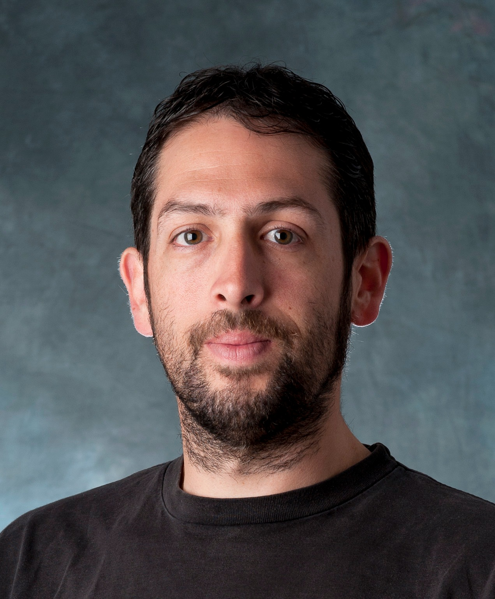

A/Prof. Simon Conn
by Simon Conn, 11 Oct 2021

Associate Professor Simon Conn is an NHMRC Investigator Leadership fellow and runs the Circular RNAs in Cancer Laboratory at Flinders University. His laboratory has a particular strength and focus on RNA splicing in brain cancer and is a proud founding member of the Australian Brain Alliance, EMCR Brain Science Network, which supports interdisciplinary research among Australian EMCRs.
He has loved the challenges and opportunities of Molecular & Cellular Biology ever since completing a Bachelor of Biotechnology (Hons) at Flinders University, AUSTRALIA in 2006. He has held postdoctoral positions at the European Molecular Biology Laboratory (France) and the Centre for Cancer Biology (AUSTRALIA). This is where he discovered how canonical RNAs are the exception, rather than the rule. Uncovering how an entire class of non-coding RNAs, called circular RNAs, are formed and regulated across cell differentiation lead to a seminal publication in the field. At Flinders University, he continues to research how these circular RNAs impact cellular development and cancer (NHMRC Investigator Leadership Grant and Project funding).
Publishing seminal papers on circular RNAs and other molecular biology-rich projects in eukarytotes in Cell(x2), Nature Biotechnology, Nature Plants, The EMBO Journal (x2), RNA, Genome Biology and other top-ranking journals (20 publications in the past 5 years), with an h-index of 25 at over 100 citations per article. He has also been awarded over $5M in peer-reviewed research grants in the past 5 years.